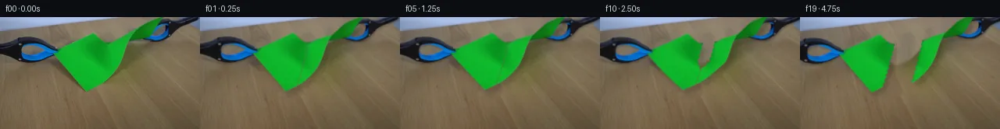

![首帧]()

Round 00
2026-11-04T23:41:15.642457+00:00像素候选变化代码 +285/−0inspection 更新
pixels 93979bb554a79346 · code be77bafbd9ffcabd
查看本轮 generate.py 真实 diff
--- previous/generate.py
+++ current/generate.py
@@ -0,0 +1,285 @@
+"""Photographic pixel warping of the provided paper-pulling demonstration.
+
+No renderer, learned model, network data, or additional scene input is used.
+"""
+from pathlib import Path
+import json
+import numpy as np
+import cv2
+from PIL import Image, ImageDraw
+from scipy.ndimage import gaussian_filter, distance_transform_edt
+from artifact_io import save
+
+ROOT = Path(__file__).resolve().parent
+TMP = ROOT / '.tmp'
+TMP.mkdir(exist_ok=True)
+W, H, SS = 256, 144, 3
+source = np.asarray(Image.open(ROOT / 'first_frame.png').convert('RGB'))
+rgb = source.astype(np.float32) / 255
+yy, xx = np.mgrid[:H, :W].astype(np.float32)
+
+
+def polygon(points):
+ m = Image.new('L', (W * 4, H * 4))
+ ImageDraw.Draw(m).polygon([(round(x*4), round(y*4)) for x, y in points], fill=255)
+ return np.asarray(m.resize((W, H), Image.Resampling.LANCZOS), dtype=np.float32)/255
+
+
+# The chromatic green excess distinguishes the photographed sheet from wood.
+excess = rgb[:, :, 1] - np.maximum(rgb[:, :, 0], rgb[:, :, 2])
+paper_alpha = np.clip((excess - .012) / .12, 0, 1)
+paper_alpha *= polygon([(67,43),(119,19),(139,32),(170,23),(187,7),
+ (210,-3),(207,12),(195,25),(168,31),(160,58),
+ (145,79),(111,99),(78,64)])
+
+left_outer = polygon([(-4,33),(16,30),(23,26),(36,25),(45,26),(53,28),
+ (61,33),(69,38),(74.6,41.2),(75,45),(71,47),
+ (65,50),(56,54.5),(44,58),(32,59),(23,58),(-4,50)])
+left_hole = polygon([(28,40),(30,36),(36,34.7),(43,35),(50,37.3),
+ (57.7,40.5),(59,41.5),(53,45),(45,48.3),
+ (37,49.3),(30.4,47.8),(27.6,45),(27.5,42)])
+right_outer = polygon([(183,27),(188,19),(191,11),(198,4),(206,1),
+ (222,0),(236,-5),(256,-5),(255,2),(244,7),
+ (233,11),(226,15),(219,23),(214,28),(207,31),
+ (197,31),(188,29)])
+right_hole = polygon([(191.3,23.4),(194,16.6),(198,12),(203,8.8),
+ (209,8),(212,9.8),(212,15),(209.7,21.4),
+ (205,24.6),(199,26.2),(194,25.5)])
+
+# Alpha from the contrast to the local wood preserves soft photographic edges.
+tool_chroma = np.clip((rgb[:,:,2] - rgb[:,:,0] - .015)/.10, 0, 1)
+tool_dark = np.clip((.53 - rgb.max(axis=2))/.12, 0, 1)
+tool_strength = np.maximum(tool_chroma, tool_dark)
+left_alpha = left_outer * (1-left_hole) * tool_strength * (1-paper_alpha)
+right_alpha = right_outer * (1-right_hole) * tool_strength * (1-paper_alpha)
+
+# Covered table reconstruction, with a grain residual copied from the exposed
+# lower tabletop. Only the local removal region is modified.
+fg = np.maximum.reduce([paper_alpha, left_alpha, right_alpha]) > .015
+removal = cv2.dilate(fg.astype(np.uint8), np.ones((9,9), np.uint8))
+shadow_region = cv2.warpAffine((paper_alpha>.1).astype(np.uint8),
+ np.float32([[1,0,4],[0,1,6]]), (W,H))
+removal = np.maximum(removal, cv2.dilate(shadow_region, np.ones((11,11),np.uint8)))
+removed = cv2.inpaint(source, removal*255, 12, cv2.INPAINT_NS).astype(np.float32)/255
+grain = rgb - gaussian_filter(rgb, (3, 3, 0))
+phase = np.mod(yy+7, 82)
+donor_y = 102 + np.where(phase <= 41, phase, 82-phase)
+donor_x = np.clip(xx + .24*(donor_y-yy), 0, W-1)
+grain_sample = cv2.remap(grain, donor_x.astype(np.float32), donor_y.astype(np.float32),
+ cv2.INTER_LINEAR, borderMode=cv2.BORDER_REFLECT_101)
+blend = np.clip(distance_transform_edt(removal)/3, 0, 1)[:,:,None]
+background = np.clip(removed + .85*grain_sample*blend,0,1)
+background = background*removal[:,:,None]+rgb*(1-removal[:,:,None])
+Image.fromarray(np.uint8(background*255)).save(TMP/'background.png')
+
+
+def unmix(alpha):
+ return np.clip((rgb-background*(1-alpha[:,:,None])) /
+ np.maximum(alpha[:,:,None], .05), 0, 1)
+
+
+paper_color = unmix(paper_alpha)
+left_color = unmix(left_alpha)
+right_color = unmix(right_alpha)
+hs, ws = H*SS, W*SS
+bg_hi = cv2.resize(background, (ws,hs), interpolation=cv2.INTER_CUBIC)
+
+# A shared zigzag fracture boundary in source coordinates. Upper rows lie in
… diff truncated; 198 more lines …